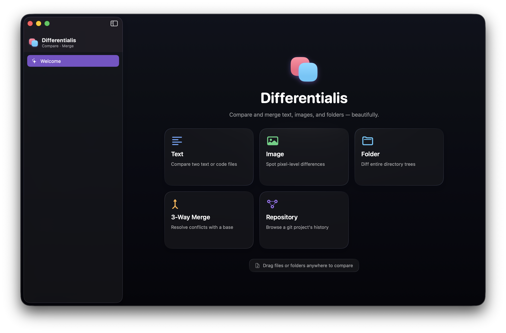

Text diff that reads minds
A from-scratch Myers engine with character-level highlights, side-by-side and unified layouts, change bars, collapsible regions, and jump-to-change navigation.
macOS · SwiftUI · Liquid Glass
A native Mac app for comparing and merging text, images, and folders, with git built in. Zero dependencies, written entirely in Swift.
v0.1.1 · Apple-notarized · free & open source · requires macOS 26

What it does
A from-scratch Myers engine with character-level highlights, side-by-side and unified layouts, change bars, collapsible regions, and jump-to-change navigation.
Two-Up, One-Up blink, Split reveal, and a false-color Difference mode where only the changed pixels glow.
Recursive scan tags every file Added, Removed, Modified, or Identical. Drill straight into the right diff.
Open any repository to browse commits and changesets, then compare any reference or commit against your working copy. Save the ones you reach for and reopen them live.
Base, left, and right with an editable result. Take a side, take both, or hand-edit, with conflicts called out.
Native macOS 26 materials on every toolbar, switcher, and popover. It feels like the system, because it is.
In the wild
Download the notarized .dmg, drag it to Applications, and open. No setup,
no account, no telemetry.
v0.1.1 · Apple Silicon & Intel · macOS 26 Tahoe